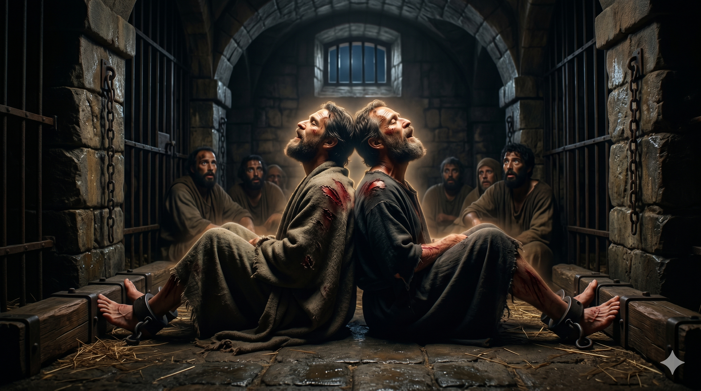
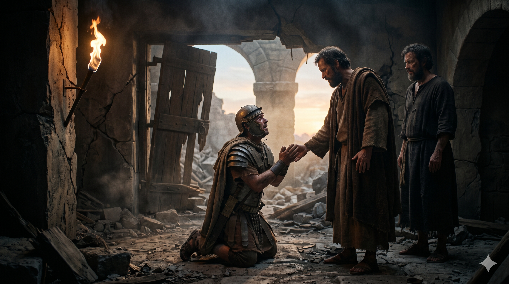

발이 차꼬에 묶인 채 한밤중에 찬송하는 바울과 실라 — 빌립보 감옥의 어둠 속
한밤중에 바울과 실라가 기도하고 하나님을 찬송하매 죄수들이 듣더라 이에 갑자기 큰 지진이 나서 옥터가 움직이고 문이 곧 다 열리며 모든 사람의 매인 것이 다 벗어진지라 … 간수가 등불을 달라고 하며 뛰어 들어가 무서워 떨며 바울과 실라 앞에 엎드리고 그들을 데리고 나가 이르되 선생들이여 내가 어떻게 하여야 구원을 받으리이까 하거늘 — 사도행전 16:25–26, 29–30
바울과 실라는 빌립보에서 귀신 들린 여종을 고쳤다는 이유로 군중에게 끌려가 매를 맞고 감옥에 갇혔습니다. 그들의 등은 상처투성이였고, 발은 차꼬에 묶여 있었습니다. 인간적으로는 좌절하거나 원망해도 이상하지 않을 상황이었습니다. 그런데 한밤중에 그들이 한 일은 기도와 찬송이었습니다. 헬라어 원문에는 이 찬송이 "죄수들이 들었다"고 기록되어 있습니다. 그 노래는 개인의 위안이 아니라, 어둠 속에 갇힌 모든 사람에게 들리는 소리였습니다.
갑자기 지진이 일어나 옥문이 열리고 모든 사람의 매인 것이 벗어집니다. 간수는 죄수들이 도망쳤다고 생각하고 스스로 목숨을 끊으려 했습니다. 그때 바울이 큰 소리로 외칩니다. "네 몸을 해치지 말라. 우리가 다 여기 있노라." 도망칠 수 있었던 바울이 그 자리에 머문 이유는 간수 한 사람을 살리기 위해서였습니다. 그날 밤 간수와 그의 온 집이 세례를 받습니다. 차꼬의 상처가 복음의 씨앗이 되었습니다.

무릎 꿇고 "어떻게 하여야 구원을 받으리이까" 묻는 빌립보 간수와 그 앞에서 답하는 바울의 모습
우리는 고통 속에서 찬송할 수 있습니까? 바울과 실라의 찬송은 상황이 좋아서가 아니라, 하나님이 선하시다는 믿음 위에 세워진 찬송이었습니다. 어둠 속에서 드리는 찬송은 가장 강력한 신앙의 고백입니다. 지금 당신의 삶에 차꼬가 묶인 것 같은 상황이 있다면, 그 상황이 하나님의 이야기가 끝났다는 의미가 아닙니다. 오히려 가장 놀라운 장이 시작되는 전야일 수 있습니다.
바울은 도망칠 수 있었을 때 도망치지 않았습니다. 자유보다 한 영혼을 더 소중히 여겼기 때문입니다. 우리가 고통을 통과할 때, 그 고통이 헛되지 않은 이유 중 하나는 그 자리에 우리를 필요로 하는 누군가가 있기 때문입니다. 당신 곁에서 당신의 찬송을 듣고 있는 죄수가 있지는 않습니까? 당신의 평안이 누군가의 구원의 문을 열 수 있습니다.
발이 묶인 그 한밤중에, 노래가 나왔습니다.
고통이 찬송을 막지 못할 때,
땅이 흔들리고 문이 열립니다.
당신의 옥중 찬송이 누군가의 문을 열 것입니다.